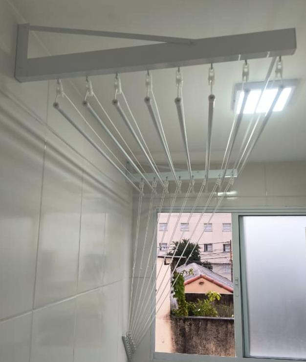
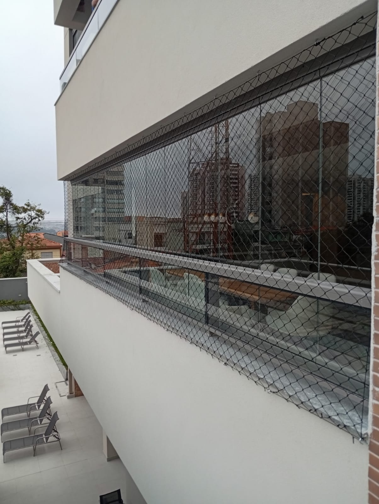
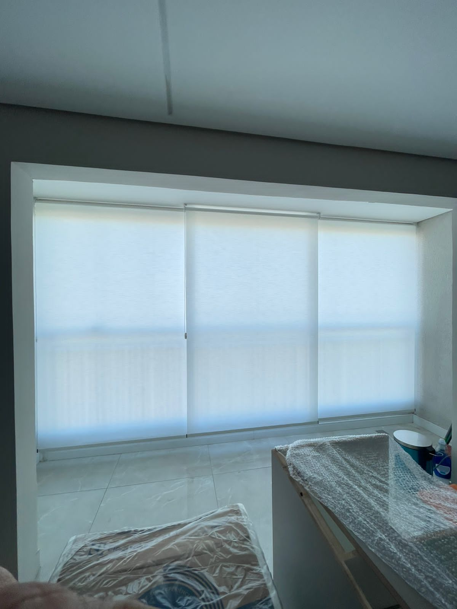
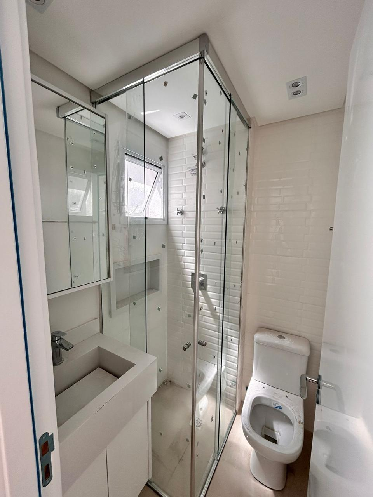
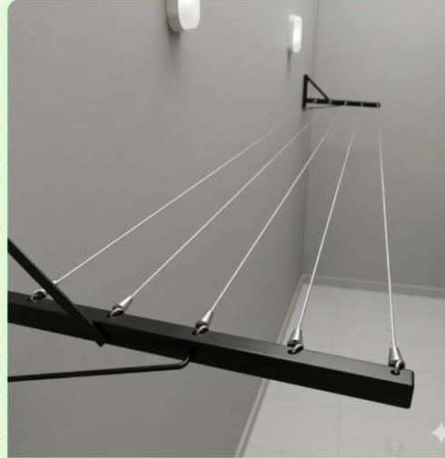
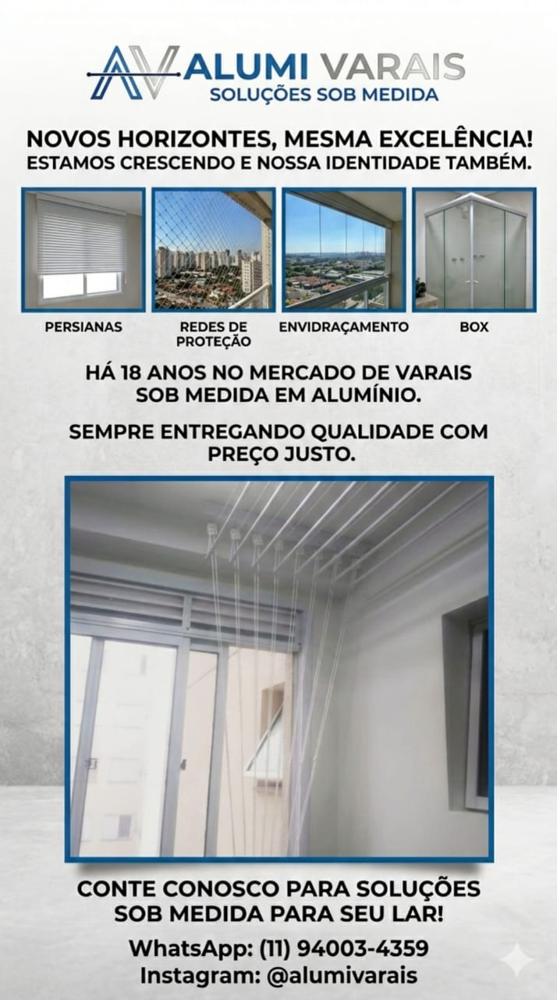

Varal sob medida instalado
Alumi Varais - Solucoes sob medida
Funcionalidade, beleza e seguranca para seu ambiente
Solucoes que valorizam seu espaco e facilitam o dia a dia: varais medida padrao, varais sob medida, redes de protecao, envidracamento de sacada, manutencoes, box, persianas e telas mosquiteiro.
18 anos no mercado
8 servicos para seu espaco
Qualidade que voce pode confiar
Excelencia que se ve no detalhe
Materiais de alta qualidade
Produtos resistentes para uso diario e melhor durabilidade.
Atendimento especializado
Orientacao para escolher a solucao ideal para cada ambiente.
Instalacao profissional
Execucao limpa, segura e pensada para o seu espaco.
Solucoes personalizadas
Projetos sob medida para residencias, apartamentos e escritorios.
Manutencao completa
Cuidamos do que ja instalamos para manter seguranca e funcionamento.
Qualidade confiavel
Acabamento e atendimento para voce indicar sem receio.
Solucoes sob medida para seu ambiente
Servicos reais da Alumi Varais para trazer mais conforto, seguranca e praticidade ao ambiente.
Varais medida padrao
Varais Medida Padrao
Modelos prontos para lavanderias e areas de servico, com instalacao pratica e acabamento limpo.
Orcar agoraVarais sob medida
Varais Sob Medida
Projetados conforme o espaco do cliente, com melhor aproveitamento de lavanderias e areas compactas.
Orcar agoraRedes de protecao
Redes de Protecao
Protecao para criancas, idosos e pets em sacadas e janelas, com material resistente.
Orcar agoraEnvidracamento de sacada
Envidracamento de Sacada
Mais seguranca, protecao contra vento e chuva, valorizando e ampliando o ambiente.
Orcar agoraManutencoes
Manutencoes
Ajustes, revisoes e cuidados para manter seguranca, funcionamento e durabilidade dos servicos.
Orcar agoraBox
Box
Box para banheiro com acabamento moderno, instalacao precisa e melhor aproveitamento do espaco.
Orcar agoraPersianas
Persianas
Controle de luz, privacidade e conforto termico com modelos que combinam com o ambiente.
Orcar agoraTelas mosquiteiro
Telas Mosquiteiro
Protecao contra insetos com instalacao discreta para janelas, portas e areas ventiladas.
Orcar agoraTrabalhos e materiais reais
Fotos e materiais enviados pela Alumi Varais para apresentar a marca, os servicos e o padrao de atendimento.

Varal sob medida
Projeto instalado conforme o espaco, com estrutura resistente e uso pratico no dia a dia.

Rede de protecao
Instalacao para mais seguranca em sacadas, janelas e ambientes altos.

Persianas
Acabamento sob medida para controlar luz, privacidade e conforto termico.

Box
Instalacao com visual limpo, vidro e estrutura pensados para o ambiente.

Varal de parede
Opcao funcional para quem precisa ganhar area util sem perder praticidade.

Servicos sob medida
Varais, redes, persianas, box, envidracamento e manutencoes com atendimento especializado.
Clientes que vivem a diferenca
Preencha somente com depoimentos reais. Se ainda nao tiver, deixe em branco ate coletar autorizacao do cliente.
Foto real
Foto real
Foto real
Tudo que voce precisa saber
Quais regioes voces atendem?
Sao Bernardo do Campo e cidades do ABC. Ajuste este texto conforme a area real de atendimento.
Quanto tempo leva a instalacao?
Depende do modelo e do local. Informe o prazo real depois da avaliacao.
Voces instalam em apartamentos?
Sim. A avaliacao considera parede, teto, espaco, medidas e tipo de fixacao.
Voces fazem manutencao?
Sim. A Alumi Varais realiza manutencoes nos servicos instalados e tambem avalia ajustes conforme o caso.
Quais servicos voces oferecem?
Varais medida padrao, varais sob medida, redes de protecao, envidracamento de sacada, manutencoes, box, persianas e telas mosquiteiro.
Como funciona o orcamento?
O cliente chama no WhatsApp, envia fotos/medidas e recebe orientacao para o melhor modelo.
Localizacao e area de atendimento
Atendimento em Sao Bernardo do Campo e cidades do ABC. Ajuste o endereco ou a regiao conforme o ponto real do negocio.
Onde atendemos
Sao Bernardo do Campo e ABC
Santo Andre, Sao Caetano, Diadema, Maua e regiao. Ajuste conforme atendimento real.